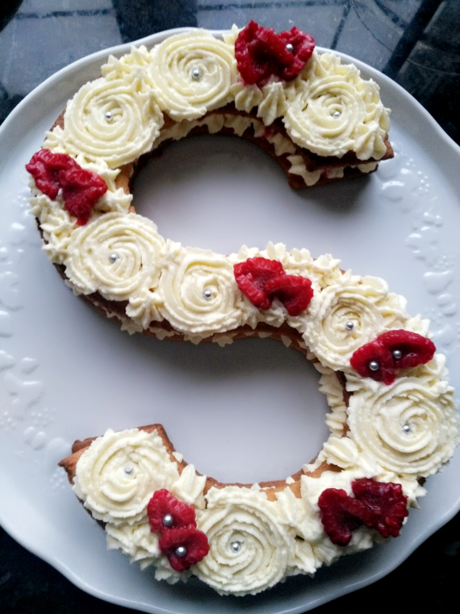

Letter-Number Cake
Ingrédients pâte sucré:
Préparation pâte sucré:
- Dans un saladier, déposer le beurre mou, tamiser le sucre glace au-dessus, ajouter la poudre d’amandes et le sel.
- Mélanger jusqu’à l’obtention d’une pâte homogène.
- Incorporer l’œuf et la farine.
- Mélanger sans trop travailler la pâte.
- Réserver la pâte au frais 2 heures.
- Faire la ganache.
- La pâte reposée, l'étaler sur le plan de travail et la découper à l’aide du patron (2 fois pour les 2 cotés).
- Metter à cuire à 180°C pendant 10 minutes.
Ingrédients ganache chocolat blanc:
Préparation ganache:
- Cassez le chocolat blanc dans un saladier.
- Faire bouillir les 100 g de crème liquide.
- Une fois à ébullition, versez la crème en 3 fois sur le chocolat blanc et mélanger à l'aide d'une Maryse entre chaque ajout. Le chocolat doit être totalement fondu.
- Ajouter la crème liquide froide.
- Recouvrir la crème et la mettre au frais 2 heures.
- Monter la crème au robot ou au batteur.
Montage:
- Pocher de la ganache sur une première pâte sucrée et mettre des morceaux de fruits frais (et/ou coulis de fruits) au milieu du pochage.
Recouvrir avec la deuxième pâte sucrée et pocher de la ganache (douille de votre choix en fonction de la décoration que vous voulez apporter)
et décorer avec des fruits, des fleurs, décoration, etc. Laissez libre cours à votre imagination.
Astuces:
- L’idéal est de vous y prendre 2 heures avant pour bien laissée reposer la ganache et la pâte sucrée.
- Vous pouvez remplacer la framboise par un autre fruit en fonction de vos goûts (fraise, cerise, fruit de la passion, ...).
